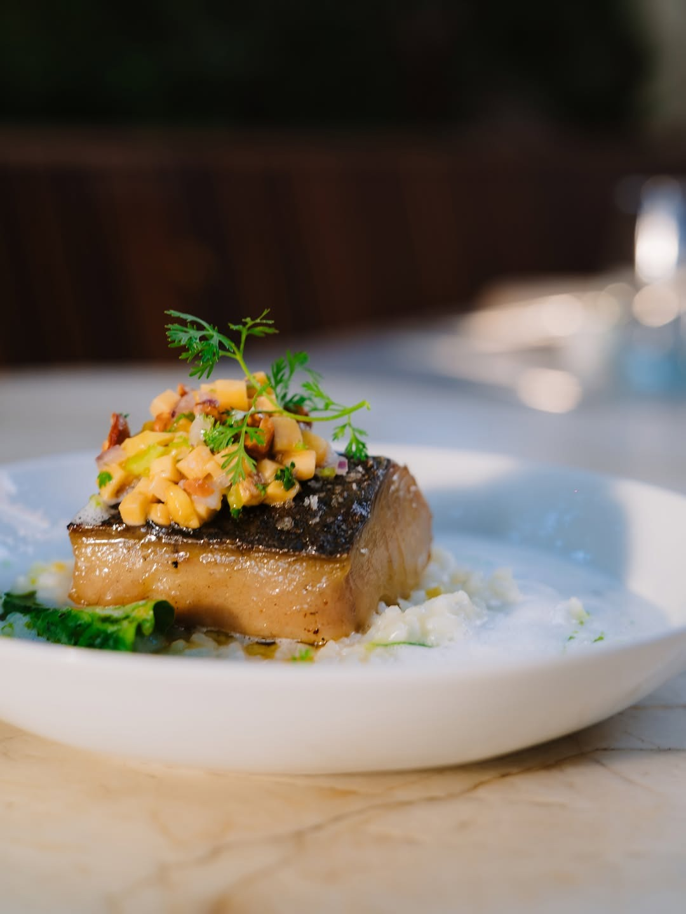
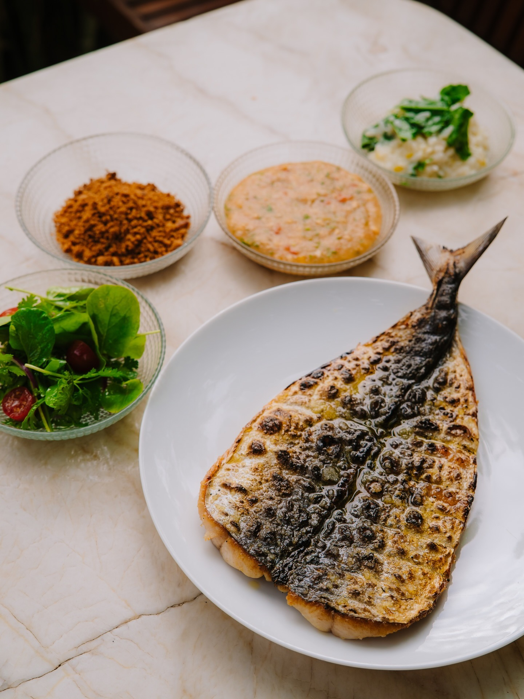
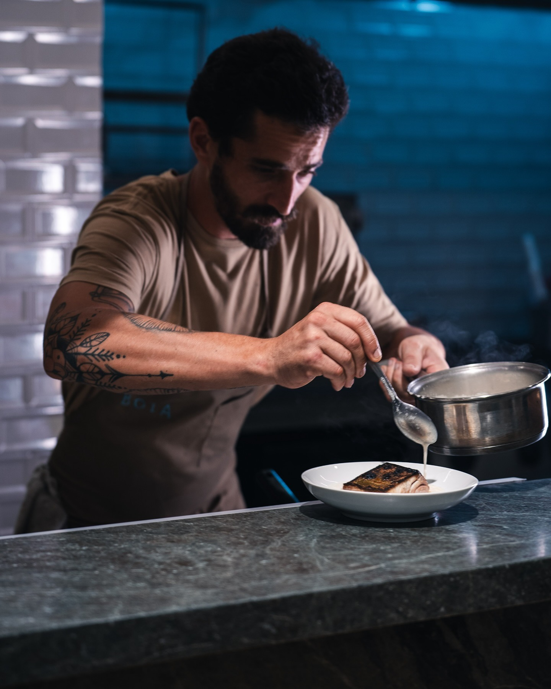
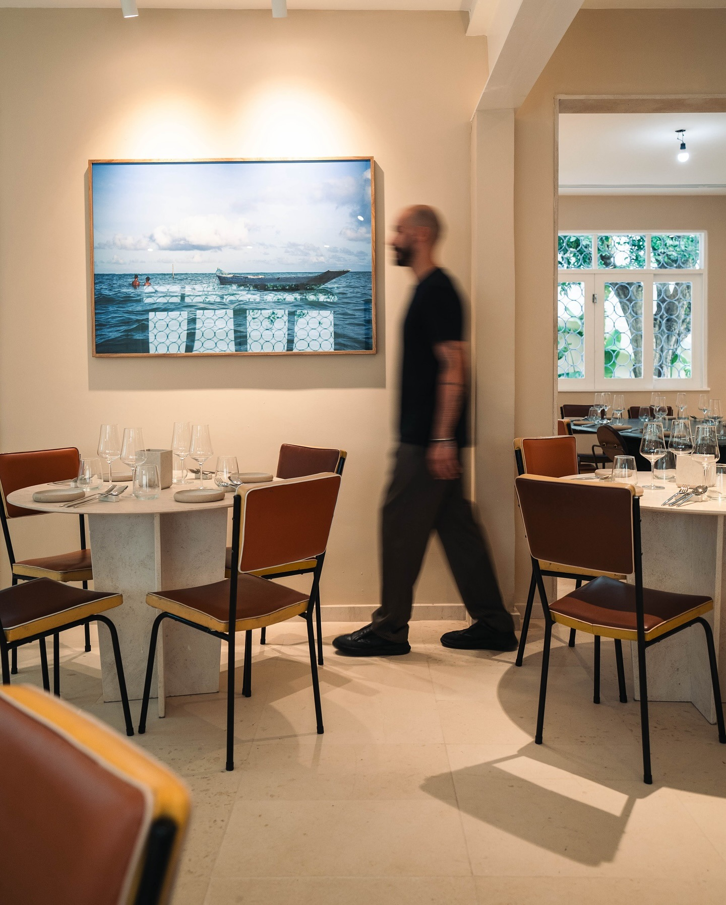
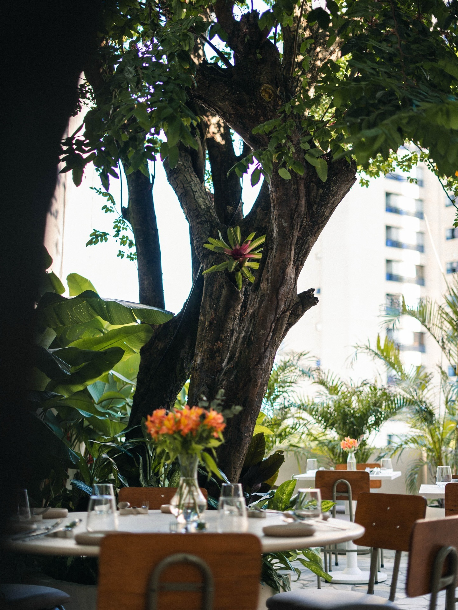

Cozinha do mar · Horto Florestal, Salvador
O mar da Bahia encontra o seu lugar à mesa.
Sabores da nossa costa, encontros sem pressa e uma cozinha que celebra a Bahia em cada detalhe.
No coração do Horto Florestal

DESDE2019SALVADOR
MAR • TERRA • BAHIA
01
Peixe frescoDe pescadores e produtores locais
02
Chef Kaywá HiltonCozinha autoral com identidade
03
Jardim e varandaUm casarão para ficar à vontade



Nossa história
Do mar para a mesa.
O Boia nasceu do desejo de contar a Bahia pelo sabor. Aqui, a cozinha contemporânea encontra ingredientes frescos, saberes da nossa terra e o prazer de receber bem.
Em um casarão com jardim e varanda no Horto Florestal, cada visita é um convite para descobrir novos caminhos entre o mar e a mesa.
2019Fundação
74Lugares
SemanalMenu de almoço
Coquetelaria
Um brinde ao agora.
Drinks autorais que acompanham o encontro, da primeira conversa ao último gole.
01
Maré PescadorCachaça, tangerina, gengibre e água de coco
02
Maré Mansa sem álcoolGengibre, limão-siciliano, tônica e tomilho
Quem nos visita
Encontros que ficam.
Visite o Boia
Seu lugar à mesa nos espera.
Escolha o melhor momento para vir. A gente cuida do resto.